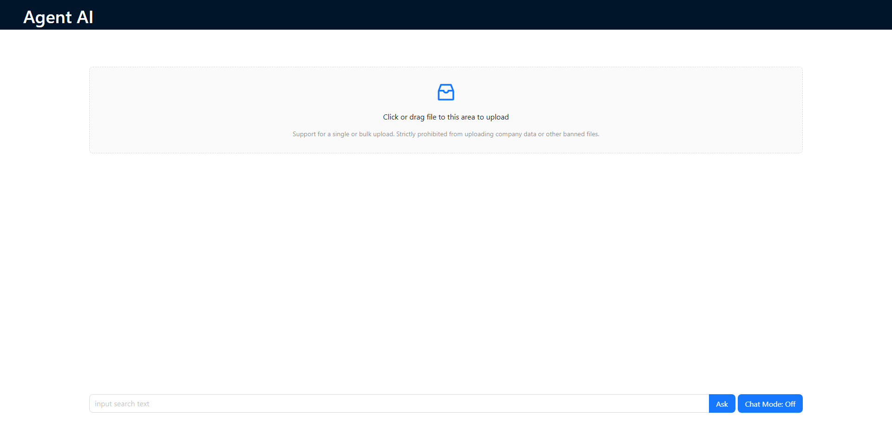
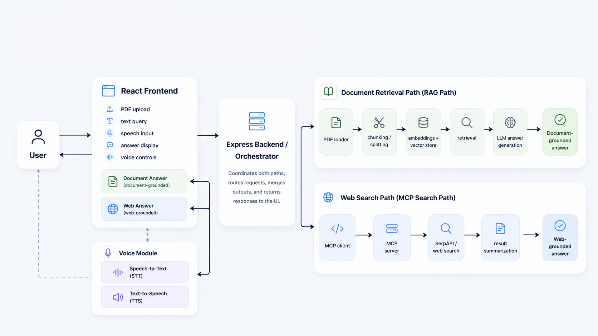
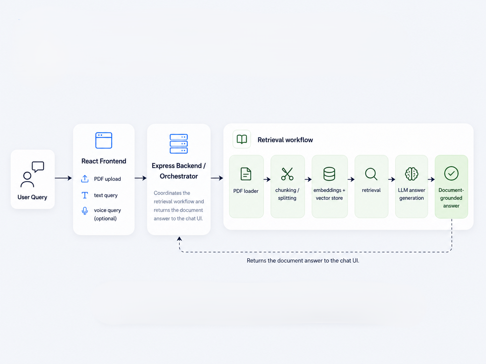
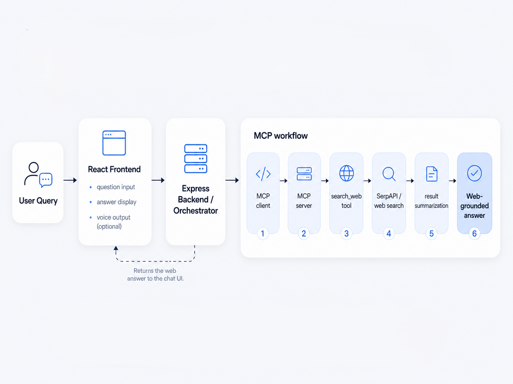

2
response paths
AgentAI is a web-based document question answering system developed as the final project for TAMU CSCE 625 Artificial Intelligence. It combines retrieval over uploaded PDFs with an MCP-based search path and presents both outputs in a shared chat interface that also supports speech input and playback.

Overview
The system is built around a compact interaction loop: upload a file, ask a question, and inspect the response. For each query, the backend can return a document-grounded answer from the uploaded PDF and a separate web-grounded answer based on search results. This keeps local evidence and external context visible as distinct sources in the same interface.
The document path retrieves relevant passages from the uploaded PDF before generating an answer.
The search path is exposed through an MCP client/server workflow backed by SerpAPI.
Upload, chat, answer comparison, and voice controls are handled inside one React interface.
Approach
AgentAI separates knowledge access from interaction. The retrieval path handles uploaded documents, the search path handles external context, and the interface keeps both outputs readable in the same conversation. This division makes the current prototype easier to explain, extend, and demonstrate.
The backend loads the PDF, splits it into chunks, computes embeddings, retrieves relevant context, and generates a response from the retrieved passages.
A dedicated MCP server exposes a search_web tool. The backend client calls this tool and summarizes the returned web snippets as a second answer path.
Speech recognition captures spoken queries and text-to-speech plays back responses, extending the same chat workflow beyond typed input.
System
The frontend handles file upload, query input, answer rendering, and voice controls. The backend coordinates both the retrieval flow over uploaded PDFs and the MCP-based search flow, then returns both outputs together for display in the conversation view.

Upload → parse → split → embed → retrieve → generate a document-grounded answer.
Query → MCP client → MCP server → web results → summarized external answer.
The chat view keeps the two outputs separate and supports switching between typed and spoken interaction.
Tech views
The project separates document-grounded retrieval from web-grounded search. The figures below are included to make those two paths legible at a glance: the retrieval figure summarizes the local document flow, while the MCP figure shows how tool access is routed through a client/server interface.


search_web tool through an MCP client/server workflow.Showcase
The showcase area is organized around the two clearest interaction loops in the project: one for PDF upload and document search, and one for speech-based questioning and playback. A small public PDF sample is also included so that visitors can preview the kind of file used in a lightweight demo flow.
Place the short walkthrough here for the upload flow, the document query, and the side-by-side response view.
Recommended: embed or link your final demo clip here.
Use the second slot for the speech interaction loop, including recording, answer return, and playback.
Keep this clip short and focused on the speech interface.
Current scope
Next steps
Resources
Source code, README, and implementation details for the current system.
SlidesThe course presentation used to explain the project scope, design, and demo plan.
RecordThe implementation notes and screenshots collected during the project build process.